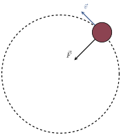
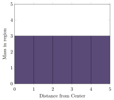
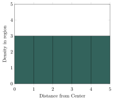
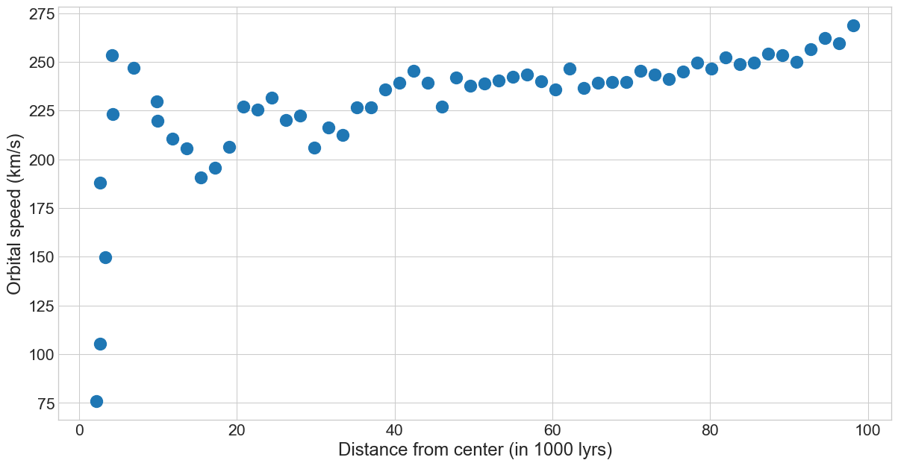
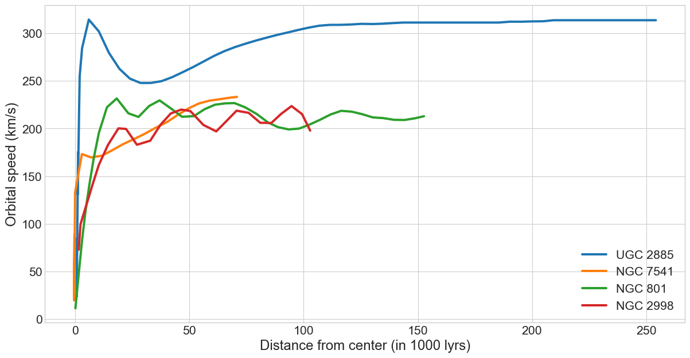
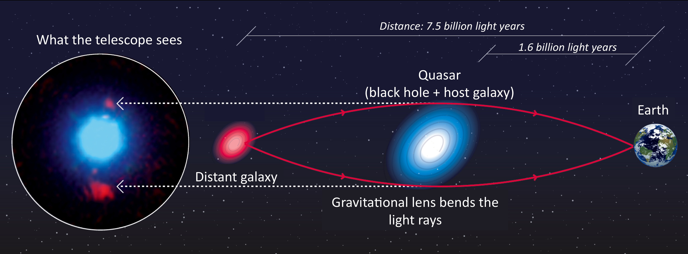

Jed Rembold
April 15, 2025
emcee package, which you will probably need
to install through pip
Emcee operates as an abstract data type,
wherein you create a sampling object and then can interact with it and
run samples using defined methodsmcmc
package, which also seems reasonably strong, though it doesn’t seem to
have all of the flexibility of emceesampler = emcee.EnsembleSampler(
num_walkers, num_dims,
log_function, args=[extra arguments]
)Generating starting points usually done with some variation of a random gaussian near a starting point:
starts = np.random.multivariate_normal(
mean = [0,1,10],
cov = [[1,0,0],[0,0.5,0], [0,0,5]],
size = num_walkers
)You can then start a sampling run by telling the sampler where all the walkers should begin and how many steps they should take
sampler.run_mcmc(starts, num_iterations)You can get the iteration chains back from the sampler after a
run using .get_chain()
This will usually return a 3D array, indexing over the parameter, walker, and iteration
Can visualize a particular parameter over all walkers using
plt.plot(sampler.get_chain()[:,:,0], 'k', alpha=0.3)After examining, will commonly want to discard the burn in and flatten all the individual walkers:
flat_samples = sampler.get_chain(discard=num_dis,
flat=True)corner package
corner will automatically generate both
individual parameter distributions and all pair-wise 2D histogramsNeed to install and load the mcmc
package
Gives you the metrop function, for
Metropolis-Hastings
out <- metrop(ln_pdf, start, num_iterations)You can then access the chain under:
out$batch
The documentation specifies you want an accepted ratio of around 0.2
scale argument to adjust
this (above 1 is bigger steps, smaller than 1 is smaller steps)




